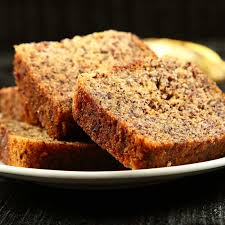

For other uses, see Banana cake (disambiguation).
A banana cupcake
A banana cake is a cake prepared using banana as a primary ingredient and typical cake
ingredients. It can be prepared in various manners, including as a layer cake, as muffins and as cupcakes.
Steamed banana cake is found in Chinese, Malaysian, Indonesian and Vietnamese cuisine.[1][2][3] In the Philippines,
the term "banana cake" refers
to banana bread introduced during the American colonial period of the Philippines.[

SERVES 4
INGREDIENTS CHECK LIST
Banana -3
Coconut Oil --0.25cup
Sugar-0.50cup
Curd---3/4cup
Wheat Flour--1cup
Cocoa Powder--1/4cup
Corn Flour--1tsp
Baking Powder--1tsp
Baking Soda--1/4tsp
milk --2cup
Dark Chocolate--3/4cup
Cooking Instructions
BTo a bowl, add the bananas and smash it with a fork to a smooth texture. Add sugar, coconut oil and give it a good whisk till the sugar dissolves
Add curd and whisk till it combines. Add the wheat, cornflour, cocoa powder, baking powder and baking soda and sieve it into the bowl and fold the mixture with a spatula
In a pan, add 1 tsp of Olive oil, and chicken. Season this with ¼ tsp of salt and ¼ tsp of pepper. Cook the chicken for 3 mins. Remove the chicken from the pan./li>
Add milk and mix till it combines to form a a batter. Add chopped chocolate and fold it in.
Bake it in a preheated oven at 180 degrees celsius for 55 minutes. Check with a toothpick to see if it is cooked through.
Take it out of the oven and let it cold down completely. Cut and serve